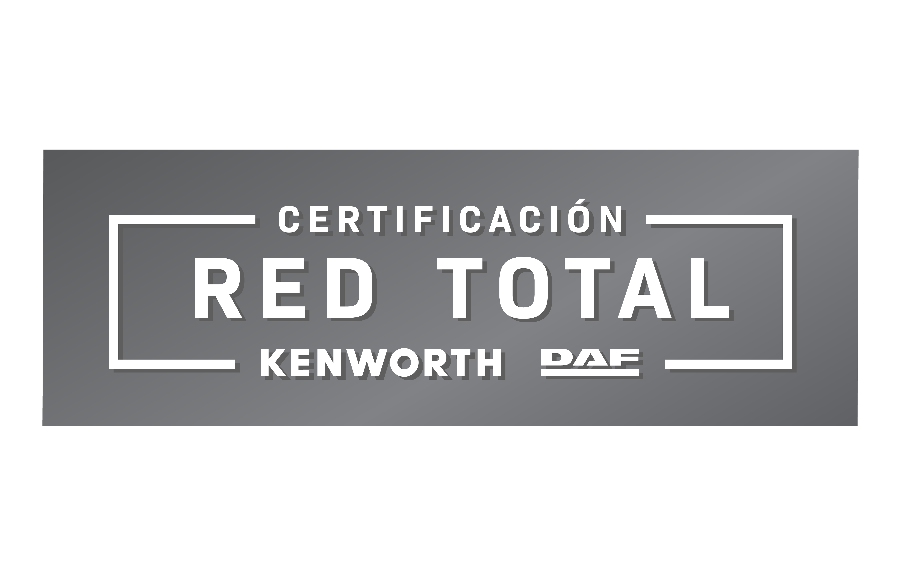

SERVICIO · KENWORTH DAF BACE
Más kilómetros.Menos tiempo detenido.
Servicio postventa especializado para proteger la disponibilidad, seguridad y rentabilidad de cada unidad de tu operación.
SOLUCIONES A TU MEDIDA
Capacidad técnica donde la necesitas.
MANTENIMIENTOS PREPAGADOS
Mantenimientos con cobertura nacional.
CERTIFICACIÓN RED TOTAL
COMPROMISO DE EXCELENCIA EN CADA TALLER.
El programa de CERTIFICACIÓN RED TOTAL implementado en los talleres Kenworth DAF tienen el objetivo de asegurar el mejor servicio postventa a nivel nacional. El programa se asegura que los talleres de nuestros concesionarios ofrezcan un servicio profesional que acompañe a nuestros clientes durante todo el ciclo de vida del vehículo..

AGENDA TU SERVICIO
Cuéntanos qué necesita tu unidad.
Comparte la información principal y un asesor podrá orientarte hacia el taller, programa o modalidad más conveniente.